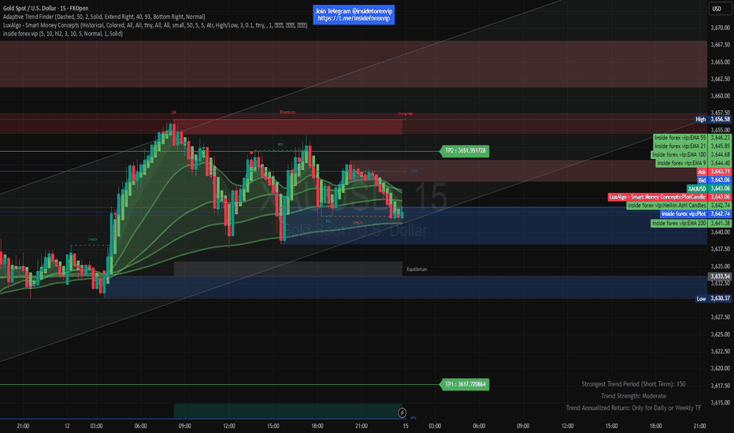

Global Coverage
Our platform integrates ocean data from satellites, buoys, ships, and sensors worldwide. Covering every ocean basin from polar to tropical regions, it offers both real-time updates and historical archives. This comprehensive reach empowers research, policy decisions, and sustainable ocean management on a global scale.

Real-time & Historical Data
Access continuous real-time ocean observations alongside decades of archived records. This dual access enables immediate insights while supporting long-term trend analysis. From short-term events to climate-scale patterns, our data empowers informed research and decision-making.
Interactive Visualizations
Our platform turns complex ocean data into dynamic, easy-to-explore visuals. From interactive maps to advanced charts, users can uncover insights with just a click. These visualizations empower faster understanding, smarter decisions, and impactful outcomes.
Custom Search & Filters
Seamlessly explore vast datasets with intelligent search and advanced filtering options. Empower users to quickly refine results, uncover insights, and access only the information that matters. Deliver precision, efficiency, and control for a truly personalized data experience.